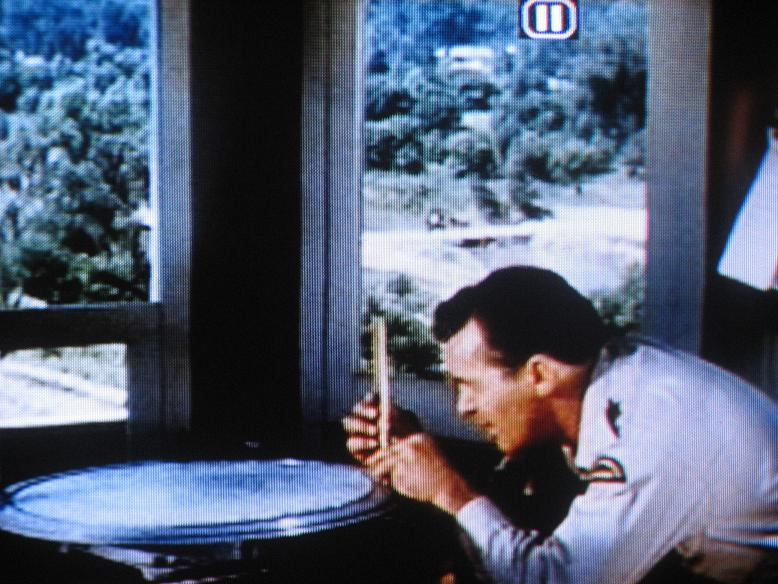

Ontario- and all of Canada in fact- has a strong historical link to the forest, logging, fire fighting, forest rangers, and fire tower lookouts. Watching the CBC adventure tv show "The Forest Rangers" on reruns for years, gave me a keen interest in the history and locations of these 80 and 100 ft. steel structures. Today it is sad to see many of the old towers have been dismantled without a trace- their illustrious past unknown by many young Ontarians. In fact, many of Ontario's hundreds of towers were taken down before I was even born. Half of them remain, and there are only two left which are manned and fully operational. Both are pictured here in the Petawawa Research Forest east of Algonquin Park.
I received a map from fellow "Forest Rangers" fan, Robert Eno, which shows the locations of these towers and their respective forest districts in Ontario. To see this 1963 map click here.
When I contacted various people across our province, and asked them about each tower in their vicinity, I was alarmed to learn how many never even knew these sentinels once existed in their own backyards (there were a total of 325 manned towers, and over 80 were located in Southern Ontario alone). For instance, the Dysart Tower which overlooks the village of Haliburton still stands, but the cupola has been removed. It can be seen clearly from Hwy. 118, and yet none of the young folk in town have a clue what this structure is. I was surprised to learn that there once was a tower in the vicinity of Gravenhurst (where we spent the summers at our cottage). Also, there were some towers located reasonably close to my home- in the Ganaraska and Northumberland Forests north of Port Hope and Cobourg. I decided I would produce a website to preserve the history of our fire tower lookouts and the towermen that worked them.
Most of the towers were erected between the 1920's and the 1950's when forest fire protection was in it's heyday. They came under the jurisdiction of Ontario's former Department of Lands and Forests which became the Ministry of Natural Resources in 1972. As the 1960's progressed the towers were in use less and less as aerial fire spotting and fire fighting crews took over. The government decided that they didn't want any lawsuits on their hands in case careless citizens climbed the unmanned towers and were injured in the process. The decision then went through to have many destroyed. This was done by either placing TNT charges at the base footings to blow them down, or by forest ranger crews who took them apart piece by piece. The odd one was pulled over by truck and left to decay on the sides of mountains. Today, the few that the government have decided to leave standing are used by the province's municipalities as landmarks and tourists attractions. The nine major tourist hot spot towers that I know of are located at: Field, Red Lake, Fort Frances, Ignace, The Frost Centre, Elliot Lake, Parry Sound, Dorset, and Temagami, Ontario. Most of these are newer towers that replaced the originals. Some of the more popular originals still used by backwoods sightseers are situated at: Restoule Provincial Park, Algonquin Park at Big Crow Lake, Ishpatina Ridge (Ont.'s highest point), Maple Mountain (near Temagami), Mistinikon Lake (near Matachewan- my personal favorite), Mount Ogidaki, Windy Lake, and the Larose Forest SE of Ottawa. (I have added a NEW PAGE HERE that lists all the 150 + towers still standing in the province. If anyone can add some more to this list please email me with the details.)
Though Ontario's and Quebec's ground fire tower detection systems have become a thing of the past, some Canadian provinces and many U.S. states still use the system. According to Henry Isenberg of the Forest Fire Lookout Association, "British Columbia, Alberta, Saskatchewan, Nova Scotia and Manitoba have active towers. The most towers per square area of any country in the world are the 236 towers of Portugal; and would you believe there are 40 active towers in Israel?"
The USA had 8,000 active towers in the 1950's, but now only a few 100 remain in full-time use. When towers there have become too old or unnecessary they are sometimes put up for sale at an auction. Once a tower went up for sale on ebay.com.
Though many Ontario towers were wasted in the 1970's, it is good to see some that have been dismantled and given to local museums: like the Hungerford Tower now at the Tweed Heritage Centre, and the Northumberland Tower now at the Canadian Fire Fighters Museum on 95 Mill Street in Port Hope. The old Bruce County Tower's remains sit on the grounds of the Northern Bruce Peninsula Fire Dept. in Tobermory; the Jamieson's Mtn. Tower's cupola was removed to the Pembroke MNR office and restored in 2003; the Thistle Tower is being restored and re-erected in the village of Field in 2009; and the Olden Tower at Mountain Grove has also been removed and restored in 2009 at property near Parry Sound.
